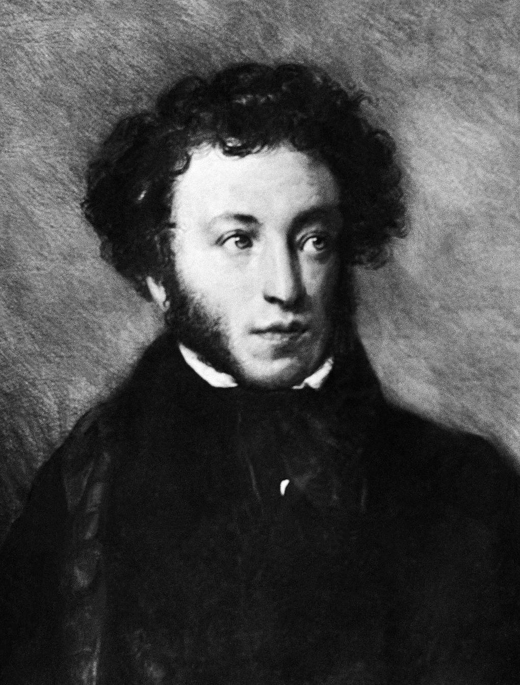
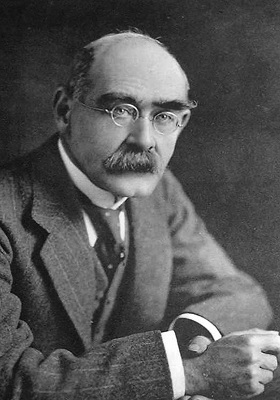
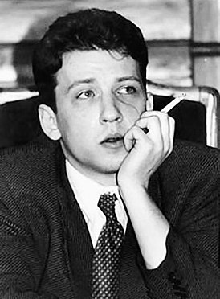
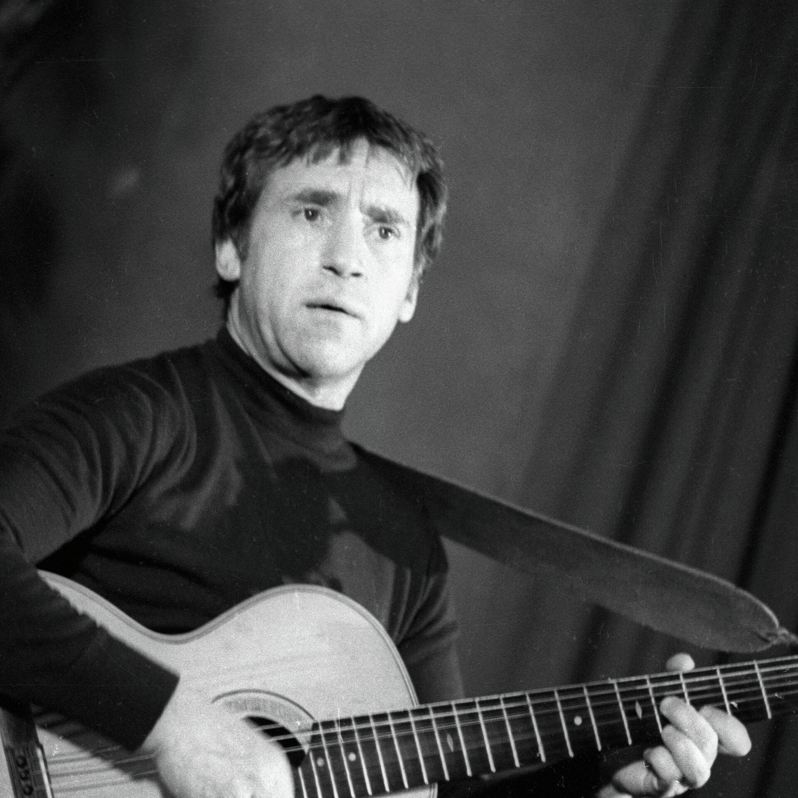

АЛЕКСАНДР ПУШКИН
ПИСЬМО ТАТЬЯНЫ К ОНЕГИНУ
Я к вам пишу — чего же боле?
Что я могу ещё сказать?
Теперь, я знаю, в вашей воле
Меня презреньем наказать.
Но вы, к моей несчастной доле
Хоть каплю жалости храня,
Вы не оставите меня.
Сначала я молчать хотела;
Поверьте: моего стыда
Вы не узнали б никогда,
Когда б надежду я имела
Хоть редко, хоть в неделю раз
В деревне нашей видеть вас,
Чтоб только слышать ваши речи,
Вам слово молвить, и потом
Всё думать, думать об одном
И день и ночь до новой встречи.
Но, говорят, вы нелюдим;
В глуши, в деревне всё вам скучно,
А мы... ничем мы не блестим,
Хоть вам и рады простодушно.

РЕДЬЯРД КИПЛИНГ
СЕРЫЕ ГЛАЗА — РАССВЕТ...
Серые глаза — рассвет,
Пароходная сирена,
Дождь, разлука, серый след
За винтом бегущей пены.
Чёрные глаза — жара,
В море сонных звёзд скольженье,
И у борта до утра
Поцелуев отраженье.
Синие глаза — луна,
Вальса белое молчанье,
Ежедневная стена
Неизбежного прощанья.
Карие глаза — песок,
Осень, волчья степь, охота,
Скачка, вся на волосок
От паденья и полёта.
Нет, я не судья для них,
Просто без суждений вздорных
Я четырежды должник
Синих, серых, карих, чёрных.
Как четыре стороны
Одного того же света,
Я люблю — в том нет вины —
Все четыре этих цвета.

БОРИС РЫЖИЙ
ЭМАЛИРОВАННОЕ СУДНО...
Эмалированное судно,
окошко, тумбочка, кровать,
жить тяжело и неуютно,
зато уютно умирать.
Лежу и думаю: едва ли
вот этой белой простынёй
того вчера не укрывали,
кто нынче вышел в мир иной.
И тихо капает из крана.
И жизнь, растрёпана, как блядь,
выходит как бы из тумана
и видит: тумбочка, кровать...
И я пытаюсь приподняться,
хочу в глаза ей поглядеть.
Взглянуть в глаза и — разрыдаться
и никогда не умереть.

ВЛАДИМИР ВЫСОЦКИЙ
У НЕЁ ВСЁ СВОЁ
У неё всё своё — и бельё, и жильё,
Ну, а я ангажирую угол у тёти.
Для неё — всё свободное время моё,
На неё я гляжу из окна, что напротив.
У неё каждый вечер не гаснет окно,
И вчера мне лифтёр рассказал за полбанки:
У неё два знакомых артиста кино
И один популярный артист из «Таганки».
И пока у меня в ихнем ЖЭКе рука,
Про неё я узнал очень много нюансов:
У неё старший брат — футболист «Спартака»,
А отец — референт в Министерстве финансов.
Я скажу, что всегда на футболы хожу,
На «Спартак», — и слова восхищенья о брате.
Я скажу, что с министром финансов дружу
И что сам как любитель играю во МХАТе.
У неё, у неё на окошке — герань,
У неё, у неё — занавески в разводах,
У меня, у меня на окне — ни хера,
Только пыль, только толстая пыль на комодах…
Ничего, я куплю лотерейный билет,
И тогда мне останется ждать так недолго.
И хотя справедливости в мире как нет —
По нему обязательно выиграю «Волгу».
